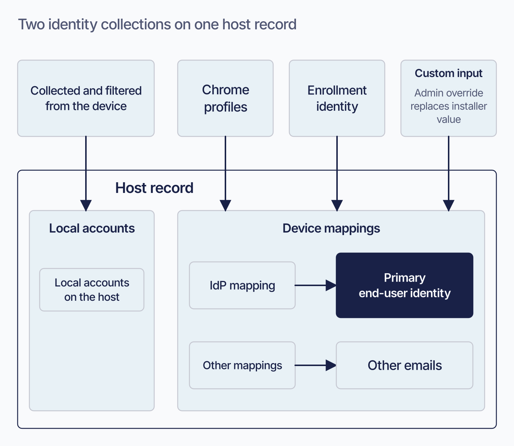
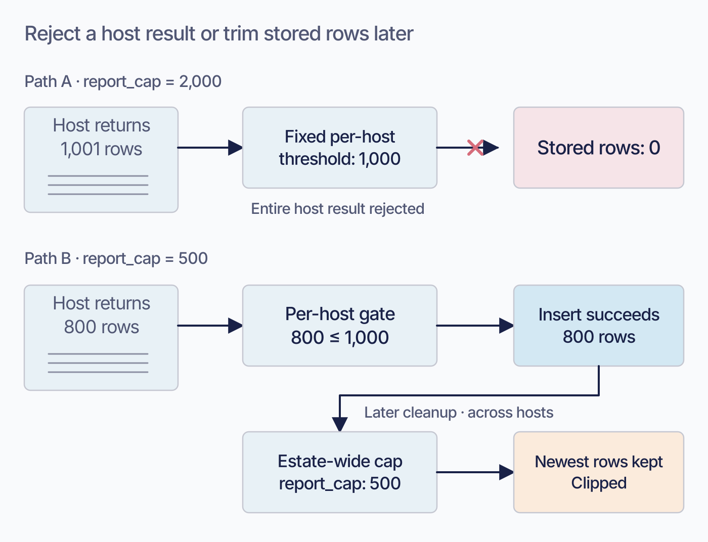
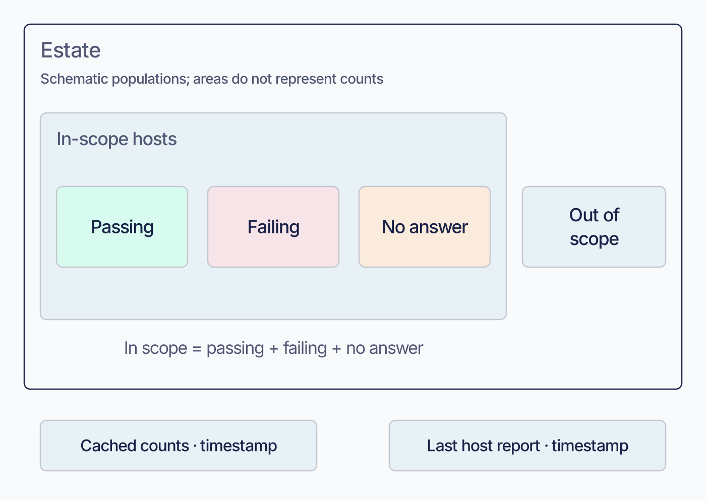
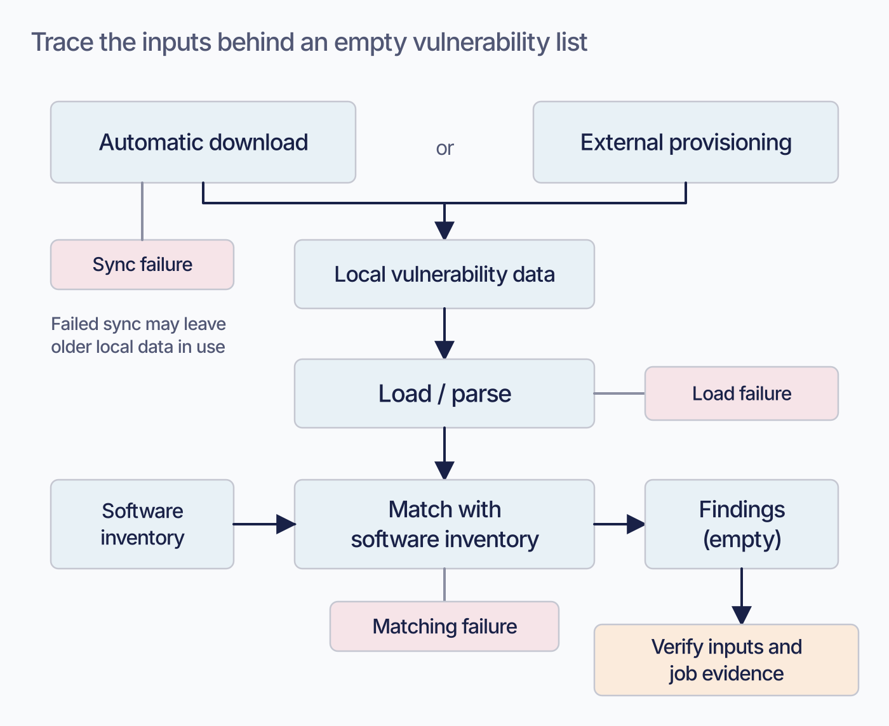
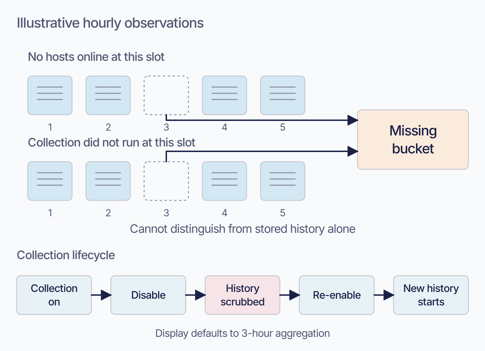
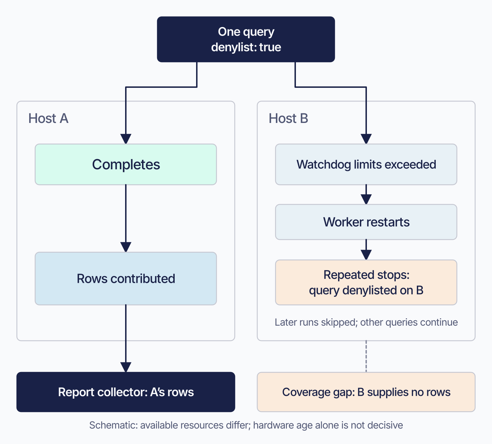
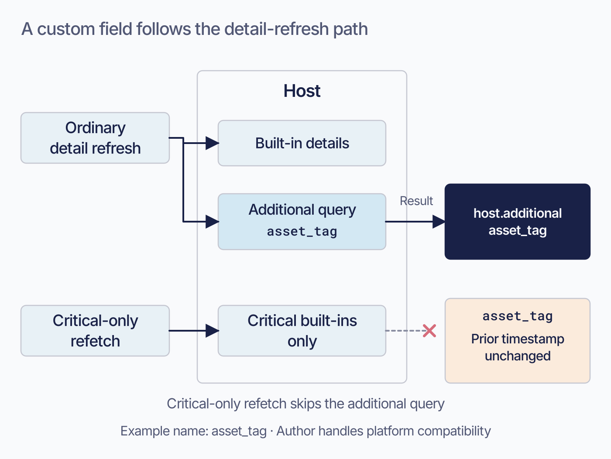

The Missing Fleet Manual · Overnight visual production
Part IV: visual review
7 candidates, prepared for the final manual-wide review. Fleet is the product, company, or server; host groups are lowercase fleet/fleets. Published chapter prose and artwork remain in place.
All parts · Full chapter briefs
Default: 720 px

Proposed 2026-09-08; editorial brief, not technical re-verification. Reduce the two-source distinction and mapping precedence explanation. Keep exact source values, account exclusions, collection toggle, and Premium condition as text. Keep current prose and this TODO until the actual image is reviewed. Then check alt text against the artwork and retain an accessible summary plus all required technical qualifications.
Proposed 2026-09-08; editorial brief, not technical re-verification. Replace the prose case walkthrough. Retain the native configuration examples, exact thresholds, and warning that raising report_cap does not solve per-host rejection. Keep current prose and this TODO until the actual image is reviewed. Then check alt text against the artwork and retain an accessible summary plus all required technical qualifications.
Proposed 2026-09-08; editorial brief, not technical re-verification. Replace the denominator-building explanation with a short accessible definition. Keep count freshness and offline-result persistence warnings, plus the exact policy_updated_at field. Keep current prose and this TODO until the actual image is reviewed. Then check alt text against the artwork and retain an accessible summary plus all required technical qualifications.
Proposed 2026-09-08; editorial brief, not technical re-verification. Replace the paragraph explaining why identical empty results have different causes. Keep the five-state table and links to server-state/log investigation; do not imply that an empty list proves either safety or failure. Keep current prose and this TODO until the actual image is reviewed. Then check alt text against the artwork and retain an accessible summary plus all required technical qualifications.
Proposed 2026-09-08; editorial brief, not technical re-verification. Condense the empty-bucket ambiguity and disable/re-enable explanation. Keep the uptime-versus-boot-duration definition and global/per-fleet deletion scope. Keep current prose and this TODO until the actual image is reviewed. Then check alt text against the artwork and retain an accessible summary plus all required technical qualifications.
Proposed 2026-09-08; editorial brief, not technical re-verification. Reduce the explanation of per-host denylisting and biased coverage. Preserve exact watchdog controls, opt-out dangers, distributed denylist duration, and where to inspect the evidence. Keep current prose and this TODO until the actual image is reviewed. Then check alt text against the artwork and retain an accessible summary plus all required technical qualifications.
Proposed 2026-09-08; editorial brief, not technical re-verification. Condense the definition and refresh/skipping paragraphs. Retain configuration syntax, per-fleet GitOps-only write path, platform warning, and stable-name contract. Keep current prose and this TODO until the actual image is reviewed. Then check alt text against the artwork and retain an accessible summary plus all required technical qualifications.